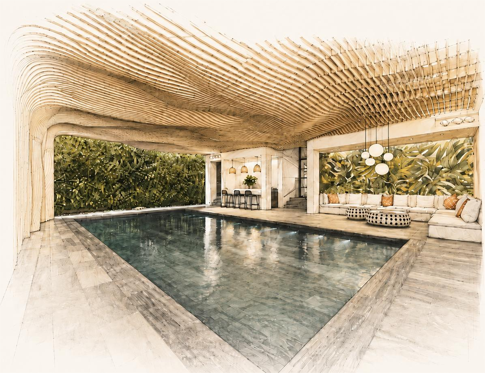

A main contractor trusted to deliver refined residential projects
with craftsmanship, coordination and attention to detail.

Our History
Seacon is a specialist main contractor delivering exceptional
private residential projects across London and the surrounding
areas. Built on a commitment to quality, craftsmanship and
trusted relationships, we bring together experienced construction
professionals, skilled trades and carefully selected specialists
to deliver homes of the highest standard.
With extensive experience in complex refurbishments, extensions, structural remodelling and fine finishes, we understand the care, coordination and attention to detail required when working on London’s finest residences. Our reputation is founded on reliability, discretion and a dedication to delivering beautifully crafted homes that reflect the ambitions of our clients, design teams and project partners.
Our Work
Seacon specialises in the delivery of high-quality private
residential projects, with particular expertise in complex
refurbishments, extensions, structural remodelling and
exceptional finishes. Working across London’s most prestigious
addresses, we understand the care, coordination and discretion
required to deliver homes of outstanding quality.
Our approach is professional, collaborative and hands-on. From early planning through to final handover, we work closely with clients, architects, consultants and specialist trades to ensure every detail is carefully managed. With experience across prime residential properties, conservation settings and technically demanding projects, Seacon provides the expertise, reliability and craftsmanship needed to bring exceptional homes to life.
Our Process
At Seacon, every project is delivered through a dedicated
and carefully coordinated team, ensuring a highly personalised
service from initial engagement through to completion. This
structure allows us to maintain the exacting standards expected
on complex private residential projects, while supporting a
collaborative working relationship with our clients, consultants
and wider professional team.
We place great value on clear communication, careful planning and trusted partnerships. By working closely with each project team, we are able to anticipate challenges, protect quality and deliver with the discretion and attention to detail our clients expect. Much of our work comes through recommendation, reflecting the strength of our relationships and the confidence our clients and design partners place in our ability to deliver exceptional homes.
Meet The Team
Leadership
Sean Meckin
Managing Director
The son of an architect, Sean has spent his entire working life in design and construction. For the past 30 years he has worked exclusively within the residential sector, constructing some of the most complex and meticulously finished residences for private clients and their families within central London. The scale of operation of the business and the number of projects that Seacon commit to at any one time are strictly set by Sean to ensure that he can personally engage with every project that the company undertakes.
Mark Hamblin
Commercial Director
Mark carries a vast experience of delivering high quality residential refurbishment projects over a period of 28 years within the industry and oversees all commercial aspects on each of our projects. Mark’s considerable experience is complimented by an unwavering hands-on and collaborative approach throughout the journey of every Seacon project. Mark manages an experienced team of pro-active surveyors, fostering open and collaborative procurement methods, a ‘no-surprises’ approach to cost reporting and an over-arching emphasis on ensuring that our surveying team develops strong mutual relationships with both our valued supply-chain and client teams.
David Naylor
Construction Director
Having trained as a carpenter and joiner David has spent his entire career in construction, progressing through the ranks of site management and the contracts management of high-quality projects for private clients, before joining the Seacon team in 2014. Highly organised and approachable, David engages with our projects from the pre-construction stage through to the handover of the completed residence to our Aftercare team and his considerable experience, attention to detail and problem-solving attitude consistently help to navigate the best course possible for our projects through to their successful completion.
Steve Hinds
Projects Director
The son of a stone mason, Steve has spent all his career in construction. Beginning his journey as a trainee site manager Steve progressed through to contracts management, working exclusively on high-quality projects for private clients before he joined the Seacon team in 2013. Personable and committed, Steve is adept at establishing a positive and collaborative approach on each of the projects that we build, consistently earning the full trust and respect of all members of both the client team and Seacon’s highly valued supply chain.
Team
Sophie Turner
Project Manager
Henry Walsh
Site Manager
Maya Patel
Quantity Surveyor
Thomas Clarke
Contracts Manager
Emma Brooks
Design Coordinator
George Ellis
Site Supervisor
Lily Morgan
Aftercare Manager
Noah Foster
Assistant QS
Grace Miller
Project Coordinator
Arthur Price
Senior Foreman
Isla Scott
Procurement Lead
Freddie Mason
Health & Safety Lead
Let's build something exceptional.
Start your project with a team that cares about every detail.